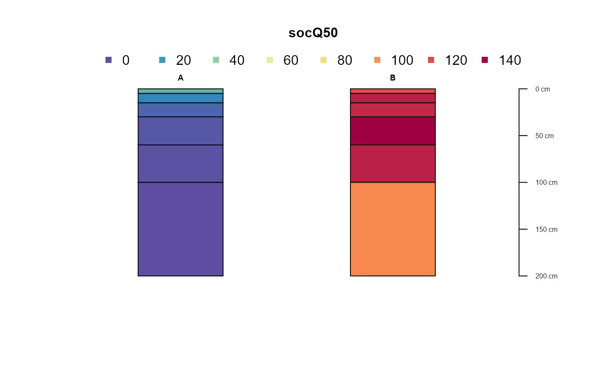

R/fetchSoilGrids.R
fetchSoilGrids.RdThis function obtains SoilGrids properties information (250m raster resolution) given a data.frame containing site IDs, latitudes and longitudes.
fetchSoilGrids(locations, loc.names = c("id", "lat", "lon"))
| locations | A |
|---|---|
| loc.names | Optional: Column names referring to site ID, latitude and longitude. Default: |
A SoilProfileCollection
The depth intervals returned are: "0-5cm", "5-15cm", "15-30cm", "30-60cm", "60-100cm", "100-200cm" and the properties returned are "bdod", "cec", "cfvo", "clay", "nitrogen", "phh2o", "sand", "silt", "soc" -- each with 5th, 50th, 95th, mean and uncertainty values. Point data requests are made through properties/query endpoint of the SoilGrids v2.0 REST API: https://rest.isric.org/soilgrids/v2.0/docs/
Andrew G. Brown
# \donttest{ if(requireNamespace("curl") & curl::has_internet()) { library(aqp) your.points <- data.frame(id = c("A", "B"), lat = c(37.9, 38.1), lon = c(-120.3, -121.5), stringsAsFactors = FALSE) x <- try(fetchSoilGrids(your.points)) if (!inherits(x, 'try-error')) plotSPC(x, name = NA, color = "socQ50") }# }